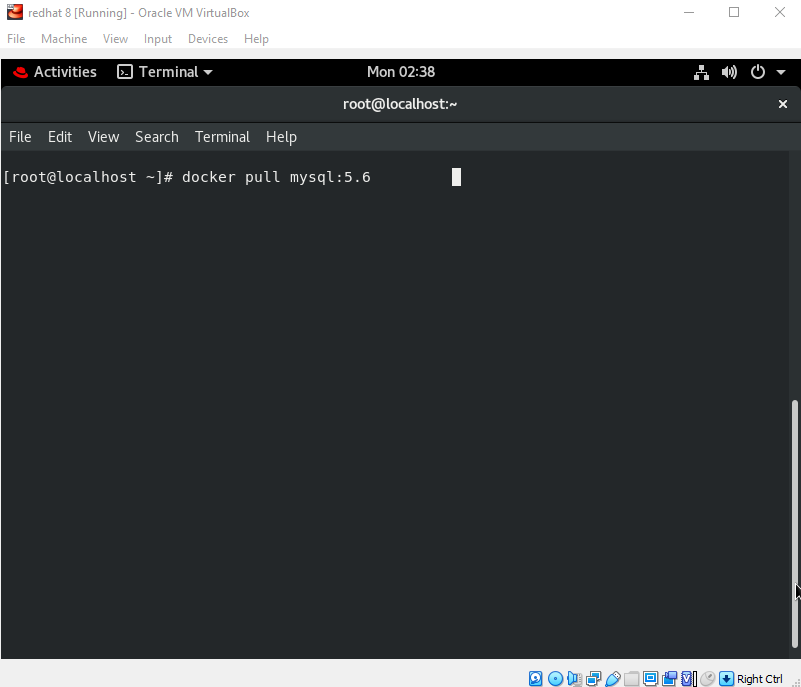
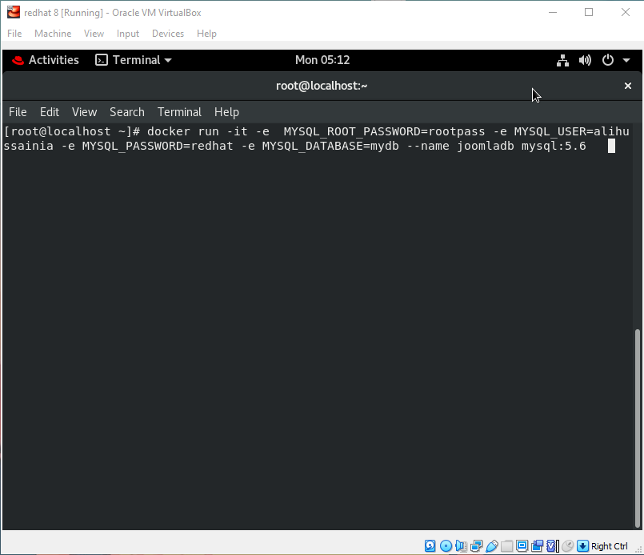
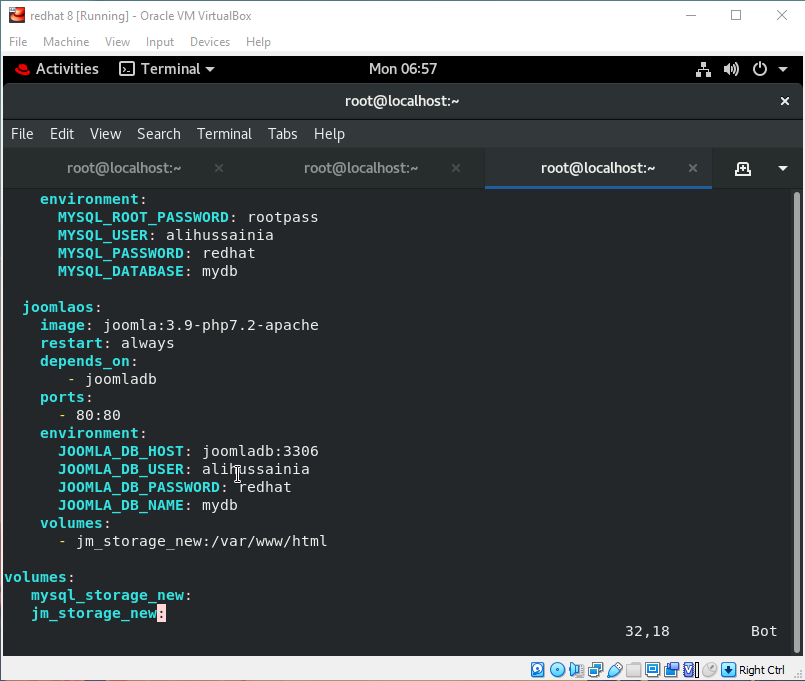

Joomla on Docker
Under IIEC-RISE 1.0 Campaign I learnt about Docker under the guidance of Vimal Daga Sir. This is my final project using Docker to set-up a WebApp called Joomla.
I am going to explain the whole set-up process in this documentation.
1. Pre-configurations needed:
- I am using RedHat Enterprise Linux. Plus I have also installed Docker Software in it. You can use any OS and inside that OS you should have docker software installed. There might be a possibility that some Linux command might be different from other OS but I will explain what is the work of that command.
2. Setting up the required things:
- Disabling firewall:
- Firewall might block some networking stuffs that’s why I at first stopped the firewall.
- Use
systemctl stop firewalld.
- Starting the docker:
- Use
systemctl start docker to start Docker Service.
3. Downloading required images:
- Pulling MySQL Image:
- Use
docker pull mysql:5.6 to download the mysql version 5.6 image to use as a database server.
- To know more about MySQL Image go to this page: https://hub.docker.com/_/mysql
- Pulling Joomla Image:
- Use
docker pull joomla:3.9-php7.2-apache to download the Joomla Image in which php and apache server is already preconfigured.
- To know more about Joomla Image go to this page: https://hub.docker.com/_/joomla

4. Setting up MySQL:
- Use
docker run -it -e MYSQL_ROOT_PASSWORD=(any password you like) -e MYSQL_USER=(any user name) -e MYSQL_PASSWORD=(any password(recommended not to use root password) -e MYSQL_DATABASE=(any database name) --name joomladb mysql:5.6 this code and it will create a user with a database inside Your MySQL Server.

- Now if you want to see is your database created or not then you have to install MySQL cilent software in your base OS. For that use
yum install mysql. Next thing check your database server ip address and use that ip while running the client software. For reference check the image below.

5. Docker-Compose:
- Before using Docker-Compose you should install the software. For reference go to this website : https://docs.docker.com/compose/install/
- You can create and edit this file using vim editor. For that use
vim docker-compose.yml. Remember the file name should always be docker-compose.yml.
- In the below picture you can see the composed file. Let me tell you how it’s done.

version:
- In each version the style and syntax are different. I used version 3 cause it’s easy to compose than other versions.
services:
- In docker compose we use the term services to rectify which things will run when we start the compose file.
container name:
- joomlaos and joomladb are the name of the containers which will be setup. Docker-compos